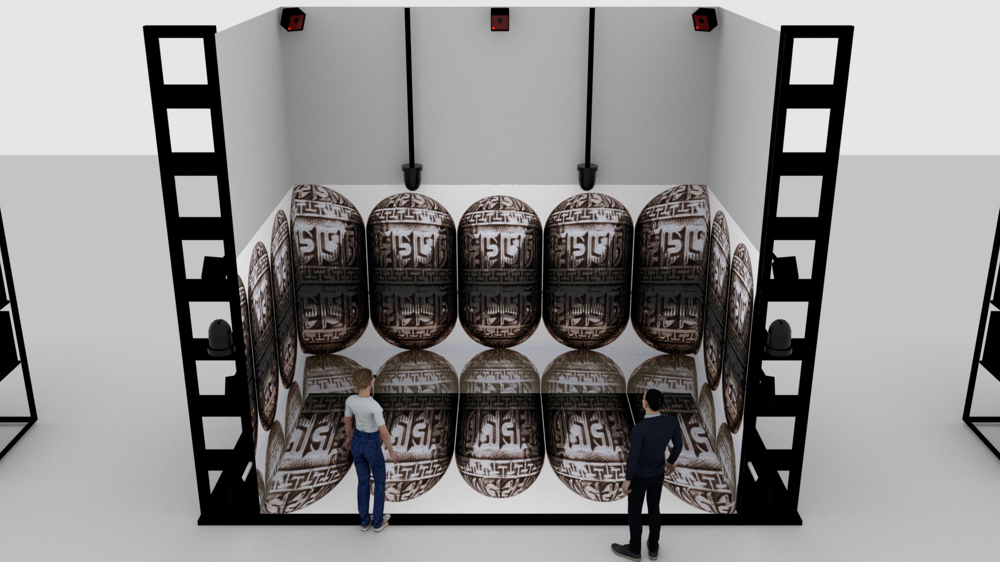
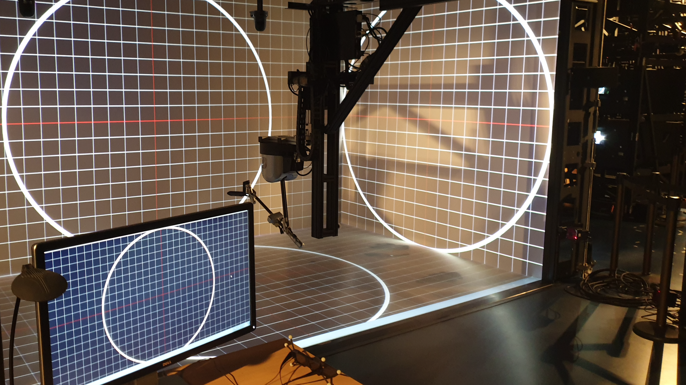
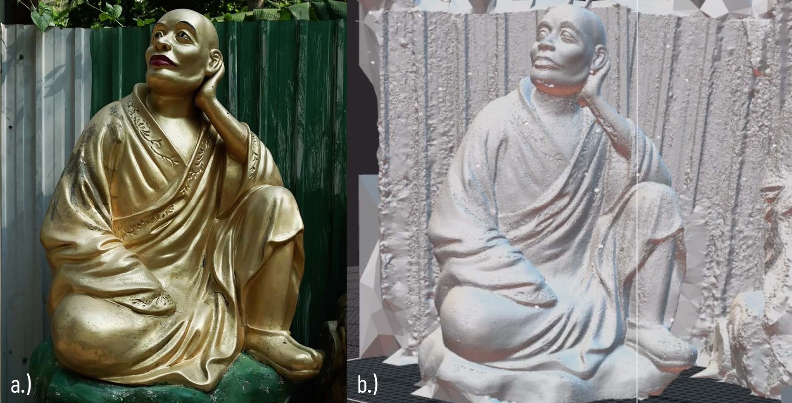
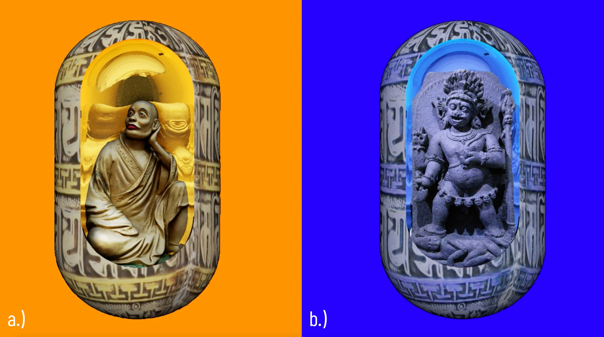
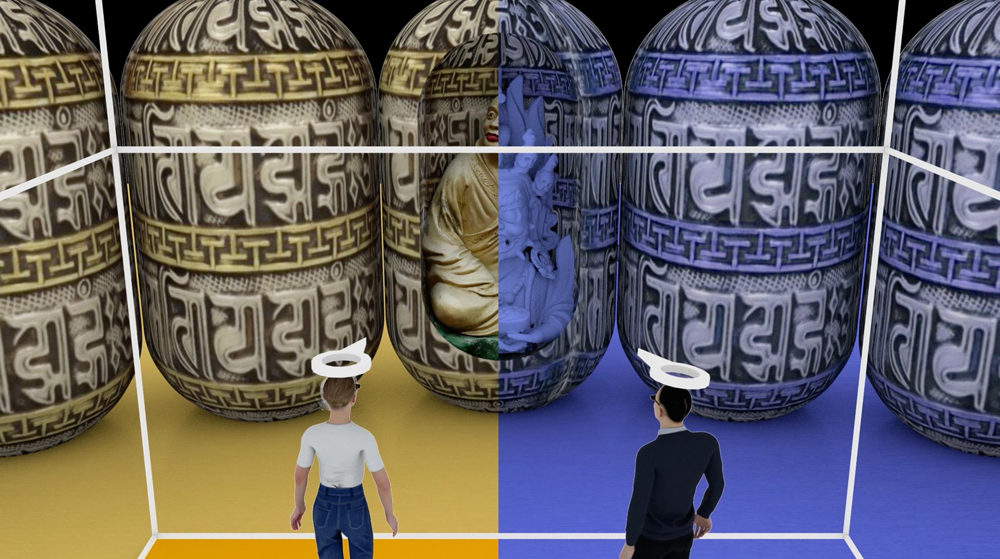
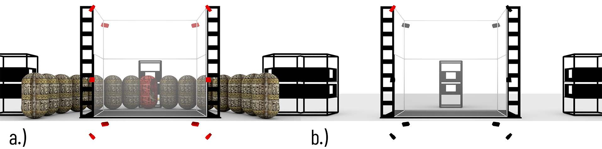

Principal Investigator: Christian Sandor Host Institution: VENISE TEAM / Paris-Saclay University
Submission for the:
Unreal MegaGrants Scheme
Abstract
10.000 Buddhas is a digital art installation using VR immersive environments. The artwork's central elements are the statues at the Ten Thousand Buddhas Monastery in Hong Kong [1]. Digital replicas of these statues populate the virtual environment. Using the EVE (Evolutive Virtual Environment) system [2], the users can immerse themselves in the monastery's virtual reinterpretation.
The EVE system is a multi-user CAVE allowing double stereoscopy. It incorporates high-quality hardware, such as an ambisonic sound system, high-precision tracking, and haptic devices. This project will utilize the Unreal Engine to control the listed technology and provide a holistic experience.
This project aims to share the emerging aesthetic and technological findings with the Unreal Community.

Figure 1. Overview of the 10.000 Buddhas artwork during operation in the EVE system. Due to the system's double stereoscopy feature, it is possible to visualize different environments for two users.
Description
This section introduces the project's conceptual and technical framework. It describes how the project benefits from Unreal Engine's vast features. Moreover, this section mentions how the Unreal Community can benefit from the project.
EVE System
The EVE system is a unique, multi-user CAVE that provides multi-user 3D perception. The system includes three 5m high HD screens, which enclose a 13 m2 floor-glass screen. The system provides 3D tracking of people, high-end 3D audio, and a large-scale haptic device.

Figure 2. Documentation of the EVE system in-situ. The system features four projection screens with the possibility of stereoscopic visualization, high-precision trackers, haptic devices, and an ambisonic sound system.
Unreal Engine
The project aims to use Unreal Engine as extensively as possible. Therefore, this artwork will rely on the game engine and additional applications included with the Engine (Switchboard, nDisplay) and software part of the Epic Games (RealityCapture). Ideally, the project would use only Unreal Engine and its components to control every aspect of the EVE system.

Figure 3. Digitalization of the Arhat statues. Picture a.) shows the real statue at the 10.000 Buddhas Monastery. Picture b.) shows the result of the photogrammetry process.
Digitalization of the Arhat [3] statues happens using photogrammetry. The Arhat statues are the various sculptures residing on the path leading to the Ten Thousand Buddhas Monastery. The software of choice for this task is Reality Capture since it provides fast and high-quality service.
Unreal Engine's visual scripting language is very appealing for artists, especially those unfamiliar with scripting but who want to develop interactive artworks. In this case, this node-based scripting system covers the game level design, adding interactive properties to the game elements and processing the tracking sensors' data.
The EVE system is a complex framework, which includes projection, audio, and tracking. It is, therefore, necessary to control many instances of Unreal on remote computers with ease. To handle the communication between many devices, Switchboard is the ideal application.
The EVE system has four projection screens. Moreover, it provides stereoscopic 3D visualization for two users, meaning that the software of choice must handle four synchronized video outputs. The nDisplay technology is a perfect choice for this role. However, achieving dual-stereoscopic projection in the context of the EVE system (combining polarized and active stereo technologies) is not a straightforward task. The project aims to develop a framework for this technology within Unreal. This framework will be accessible to the Unreal Community as an open-source project file.
For handling spatial audio rendering in the EVE environment, MetaSounds can be a perfect solution. The Engine's node-based programming system for audio is a relevant choice for artists. However, solving ambisonics might require combining MetaSounds and WWise: MetaSound will generate the sound, and WWise will distribute it to the ambisonic system.
The proposed artwork will be the first to integrate Unreal Engine into the EVE system. Currently, the EVE system works with Unity in combination with MiddleVR and MAX/MSP or PureData is responsible for controlling the 3D sound system.
In conclusion, the EVE system is a technically complex and unique framework. Consequently, implementing Unreal Engine for rendering in EVE will cover multiple technical fields, such as unique stereoscopic visualization, creative usage of ambisonic sounding, and high-precision tracking of people. The emerging knowledge during the development of the project will be documented and published. The publication would include open-source project files, presentations, tutorials, and publications at various conferences and exhibitions.
Artist Statement
Figure 4. Example for the morphing animation between two randomly selected Arhat statues.
The "10.000 Buddhas" artwork builds on the tools of the EVE system, except the haptic device. Haptic rendering may be the subject of additional work after completing the MegaGrants, as an extension of the visual and audio experience. The artwork operates with two users. Its main elements are the digital representation of the 500 Arhat statues. In the artwork, each statue is sitting inside a praying wheel. One side of each praying wheel has a hole through which the statues are visible. The praying wheels form a concentric arrangement around each user. These praying wheels are facing outward by default, so the users cannot see the hole on them.
The artwork tracks each user's attention. When a user focuses on a praying wheel, it rotates and exposes the statue sitting inside. When the users' focus stays on the same capsule, the statue sitting inside starts to animate. It starts to morph one by one into the other 499 meshes in random order. When the user turns its focus away, the praying wheel turns away, hiding the statue.

Figure 5. Differences between the two virtual worlds. Picture a.) shows the virtual world seen by user 1. Arhat statues are sitting inside the capsules, and the environment shines in golden color. Picture b.) depicts a wrathful deity inside the capsule, and it shines in blueish color. The second user sees this virtual world.
The second user sees a different virtual environment than the first one. This virtual environment shows the same preying wheels, but the statues sitting inside these praying wheels differ. Instead of the Arhat statues, wrathful deities occupy them. Consequently, the artwork includes two virtual environments. They are in contrast with each other, both visually and conceptually.
Example of visual contrast: The Arhat statues' coating is golden, but the wrathful deities' have a blueish color. According to color theory, orange and blue are in a complementary relationship, in perfect contrast to each other.

Figure 6. The user on the left sees everything in golden color. For her the Arhant statues populate the capsules. On the other hand, the right user sees everything in blue and instead of the Arhant statues wrathful deities are sitting inside the capsules.
The interaction design for both users is the same. When the two users' attention directions meet, it triggers another behavior of the artwork: it swaps the virtual worlds between the users. From now on, the user seeing the Arhat statues will see the wrathful deities and vice-versa.

Figure 7. The installation uses the ambisonic sound system in two different ways. Picture a.) depicts the speakers emitting heavy bass to produce vibrotactile feedback for the users. This situation happens while a capsule is rotating. Picture b.) depicts how the system will distribute the sound to the different speakers to drive the users' attention. In both pictures, the red objects indicate the currently working speakers.
The installation's sound design has two roles. First of all, it aims to support the immersion in the artwork. It supports the rotation of the praying wheels and generates vibrotactile feedback [4]. During the rotation of the praying wheels, the sound system emits heavy bass. The aim is to create resonance, which can stimulate the physical senses in the human body, thus creating a more immersive connection between the real and the virtual world.
The audio's second role is to lead the users' gaze. The EVE's ambisonic sound system can simulate 3D spatial sound, i.e., it is possible to determine and control the location of the sounds in the perceptual space. For example, a high-pitched sound arising behind a praying wheel might attract the users' attention.
In addition to technical benefits, this project is suitable to communicate higher-level achievements using Unreal Engine. For example, as an artwork, the project can showcase the rendering aesthetics of the software. It can also introduce new and creative ideas for using ambisonic sounding and interaction design in artistic practices.
Team and Motivation
Conclusion
10.000 Buddhas is an art project developed in a technically complex framework. This framework is the EVE system engineered by the VENISE research group. The project aims to implement Unreal Engine into this framework and solve as many system aspects as possible in this Engine. As described above, the expertise of my supervisor and the research team ensures relevant guidance throughout the work in progress.
The development process of the artwork will be regularly documented and published as open-source project files. Moreover, tutorials will accompany the project files, accessible through the artwork's dedicated website [12].
Additionally, exposing the artwork to the public via conferences and exhibitions is a vital part of the undertaking. Exhibitions might be good events to showcase Unreal's aesthetic benefits in real-time rendering.
References
[1] http://www.hongkongextras.com/_ten_thousand_buddhas_monastery.html [2] http://digiscope.fr/en/platforms/eve [3] https://www.britannica.com/topic/arhat [4] M. Lee, G. Bruder, T. Höllerer and G. Welch. 2018. Effects of Unaugmented Periphery and Vibrotactile Feedback on Proxemics with Virtual Humans in AR. In IEEE Transactions on Visualization and Computer Graphics. vol. 24, no. 4, pp. 1525-1534 [5] https://www.ar-lab.org [6] https://vr-in-industry.de/programm/sprecher/sandor.html [7] 2016. Proceedings of the 2016 Symposium on Spatial User Interaction. Association for Computing Machinery, New York, NY, USA. [8] G. Bouyer, P. Bourdot, and M. Ammi. 2007. Supervision of task-oriented multimodal rendering for VR applications. In Proceedings of the 13th Eurographics conference on Virtual Environments (EGVE'07). Eurographics Association, Goslar, DEU, pp.93–100. [9] Bourdot, Patrick & Dromigny, Martin & Arnal, Laurent. 1999. Virtual Navigation Fully Controlled by Head Tracking. [10] W. Chen, N. Ladeveze, C. Clavel, D. Mestre and P. Bourdot. 2015. User cohabitation in multi-stereoscopic immersive virtual environment for individual navigation tasks. 2015 IEEE Virtual Reality (VR). pp.47-54. [11] Baptiste Caramiaux, Sarah Fdili Alaoui, Tifanie Bouchara, Gaétan Parseihian, Marc Rébillat. 2014. Gestural auditory and visual interactive platform. In 14th International Conference on Digital Audio Effects (DAFx-11). Paris, France, pp.69. [12] www.10000buddhas.art